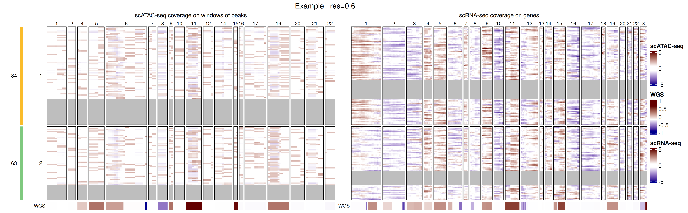
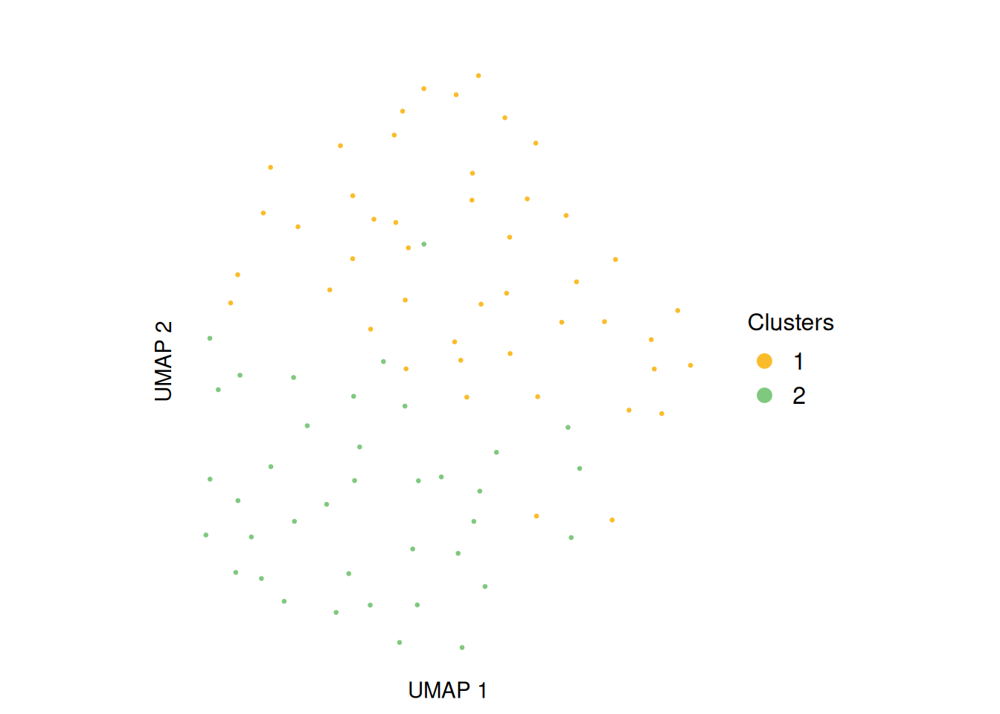

muscadet (multiomics single-cell copy number alterations detection) is an R package for identifying copy number alterations (CNAs) in cancer cells from single-cell multiomics data.
1 Installation
Install the latest version directly from GitHub.
2 Inputs and objects creation
2.1 muscomic
The muscomic objects (see ?muscomic) are primary objects for the muscadet analysis, created using the CreateMuscomicObject() function with the following inputs:
-
type: a type of omic,"RNA"and"ATAC"being the ones currently supported. Note that for other DNA types omics, the"ATAC"type can be used. -
mat_counts: a raw count matrix (see?mat_counts). -
allele_counts: a table of raw counts per allele (see?allele_counts) (optional, can be added later during analysis). -
features: a table of features coordinates (see?features).
library(muscadet)
# Load example dataset inputs:
# Matrices of raw counts per features
data("mat_counts_atac_tumor", "mat_counts_rna_tumor")
# Table of raw counts per allele
data("allele_counts_atac_tumor", "allele_counts_rna_tumor")
# Table of feature coordinates
data("peaks", "genes")
# Create individual omic objects
atac <- CreateMuscomicObject(
type = "ATAC",
mat_counts = mat_counts_atac_tumor,
allele_counts = allele_counts_atac_tumor,
features = peaks)
rna <- CreateMuscomicObject(
type = "RNA",
mat_counts = mat_counts_rna_tumor,
allele_counts = allele_counts_rna_tumor,
features = genes)
atac
#> A muscomic object of type ATAC labelled scATAC-seq containing:
#> mat.counts coverage data matrix
#> 112 cells
#> 1000 features: peaks
#> 691 variant positions
rna
#> A muscomic object of type RNA labelled scRNA-seq containing:
#> mat.counts coverage data matrix
#> 119 cells
#> 500 features: genes
#> 373 variant positions2.2 muscadet
The muscadet objects (see ?muscadet) consists of one or several muscomic objects, along with additional information and it will store downstream analysis results. They can be created using the CreateMuscadetObject() function with a list of muscomic objects as input as well as bulk coverage information (see ?bulk_lrr) and the genome assembly to use.
# Table of coverage information (log ratio) from bulk data (i.e. WGS)
data("bulk_lrr")
# Create multiomic muscadet object
muscadet <- CreateMuscadetObject(
omics = list(ATAC = atac, RNA = rna),
bulk.lrr = bulk_lrr,
bulk.label = "WGS",
genome = "hg38")
muscadet
#> A muscadet object
#> 2 omics: ATAC, RNA
#> types: ATAC, RNA
#> labels: scATAC-seq, scRNA-seq
#> coverage data matrix: mat.counts, mat.counts
#> cells: 112, 119 (common: 84, total: 147)
#> features: 1000, 500
#> feature labels: peaks, genes
#> variant positions: 691, 373
#> data from paired bulk sequencing: WGS
#> clustering: None
#> CNA calling: None
#> genome: hg38An example of a complete muscadet object with a demo dataset is included in the package.
# Example muscadet object
data("muscadet_obj")
muscadet_obj
#> A muscadet object
#> 2 omics: ATAC, RNA
#> types: ATAC, RNA
#> labels: scATAC-seq, scRNA-seq
#> coverage data matrix: log.ratio, log.ratio
#> cells: 112, 119 (common: 84, total: 147)
#> features: 133, 349
#> feature labels: windows of peaks, genes
#> variant positions: 691, 373
#> data from paired bulk sequencing: WGS
#> clustering: partitions = 0.6, 0.8, 1 ; optimal partition = 1
#> CNA calling: 2 clusters ; 47 consensus segments including 1 CNA segments
#> genome: hg38Create another muscadet object with reference cells data.
data("mat_counts_atac_ref", "mat_counts_rna_ref")
data("allele_counts_atac_ref", "allele_counts_rna_ref")
atac_ref <- CreateMuscomicObject(
type = "ATAC",
mat_counts = mat_counts_atac_ref,
allele_counts = allele_counts_atac_ref,
features = peaks)
rna_ref <- CreateMuscomicObject(
type = "RNA",
mat_counts = mat_counts_rna_ref,
allele_counts = allele_counts_rna_ref,
features = genes)
muscadet_ref <- CreateMuscadetObject(
omics = list(ATAC = atac_ref, RNA = rna_ref),
genome = "hg38")
muscadet_ref
#> A muscadet object
#> 2 omics: ATAC, RNA
#> types: ATAC, RNA
#> labels: scATAC-seq, scRNA-seq
#> coverage data matrix: mat.counts, mat.counts
#> cells: 99, 97 (common: 78, total: 118)
#> features: 1000, 500
#> feature labels: peaks, genes
#> variant positions: 691, 373
#> data from paired bulk sequencing: None
#> clustering: None
#> CNA calling: None
#> genome: hg382.3 Methods
Several method functions are available to access data within muscadet/muscomic objects.
library(SeuratObject) # Cells() and Features() methods imported from SeuratObject
# Cell names
Cells(muscadet_obj) # list of cells, one element per omic
Cells(muscadet_obj)$ATAC # element of the list
Cells(muscadet_obj$ATAC) # cells for muscomic object
Reduce(union, Cells(muscadet_obj)) # all cells
Reduce(intersect, Cells(muscadet_obj)) # common cells
# Feature names
Features(muscadet_obj) # list, one element per omic
Features(muscadet_obj)$ATAC
# Matrix of raw counts
matCounts(muscadet_obj) # list, one element per omic
matCounts(muscadet_obj$ATAC)
# Matrix of log ratios
matLogRatio(muscadet_obj) # list, one element per omic
matLogRatio(muscadet_obj)$ATAC
# Table of feature coordinates
coordFeatures(muscadet_obj) # list, one element per omic
coordFeatures(muscadet_obj)$RNA
library(SeuratObject) # Cells() and Features() methods imported from SeuratObject
# number of cells in total
length(Reduce(union, Cells(muscadet_obj)))
#> [1] 147
# number of common cells
length(Reduce(intersect, Cells(muscadet_obj)))
#> [1] 84
# number of cells per omic
lapply(Cells(muscadet_obj), length)
#> $ATAC
#> [1] 112
#>
#> $RNA
#> [1] 119
# number of features per omic
lapply(Features(muscadet_obj), length)
#> $ATAC
#> [1] 133
#>
#> $RNA
#> [1] 3493 Compute log ratios
Compute genome-wide coverage profiles as log ratio (LRR) matrices with computeLogRatio() for every omic present in the muscadet object.
# Compute log R ratios from scATAC-seq read counts
muscadet <- computeLogRatio(
x = muscadet,
reference = muscadet_ref,
omic = "ATAC",
method = "ATAC",
minReads = 1, # low value for small example dataset
minPeaks = 1) # low value for small example dataset
# Compute log R ratios from scRNA-seq read counts
muscadet <- computeLogRatio(
x = muscadet,
reference = muscadet_ref,
omic = "RNA",
method = "RNA",
refReads = 2, # low value for small example dataset
refMeanReads = 0.01) To adjust filters applied to features by computeLogRatio(), you can check distribution of data and filter status of features.
ATAC_features <- coordFeatures(muscadet_obj)$ATAC
ggplot(ATAC_features, aes(x = nPeaks, y = meanReads.ref, color = keep)) +
geom_point() +
geom_vline(xintercept = 1 , linetype = "dashed", color = "red") + # minPeaks threshold
geom_hline(yintercept = 1, linetype = "dashed", color = "red") + # minReads threshold
scale_y_log10() +
labs(x = "Number of peaks (minPeaks)", y = "Mean of reads in reference cells (minReads)",
title = "ATAC features (windows of peaks) filtered by thresholds") +
theme_minimal()
#> Warning in scale_y_log10(): log-10 transformation introduced infinite values.
#> Warning: Removed 197 rows containing missing values or values outside the scale range
#> (`geom_point()`).
RNA_features <- coordFeatures(muscadet_obj)$RNA
ggplot(RNA_features, aes(x = sumReads.ref, y = meanReads.ref, color = keep)) +
geom_point() +
geom_vline(xintercept = 2, linetype = "dashed", color = "red") + # refReads threshold
geom_hline(yintercept = 0.01, linetype = "dashed", color = "red") + # refMeanReads threshold
scale_x_log10() + scale_y_log10() +
labs(x = "Sum of reads in reference cells (refReads)", y = "Mean of reads in reference cells (refMeanReads)",
title = "RNA features (genes) filtered by thresholds") +
theme_minimal()
#> Warning in scale_x_log10(): log-10 transformation introduced infinite values.
#> Warning in scale_y_log10(): log-10 transformation introduced infinite values.
4 Multimodal integrated clustering
The cells are clustered based on log ratio profiles with clusterMuscadet(), two methods are available:
-
method = "seurat": Seurat’s graph-based clustering. It consists of a nearest neighbors graph construction on a weighted combination of two modalities from selected dimensions of PCA and cluster determination (seecluster_seurat()). -
method = "hclust": Integration by Similarity Network Fusion (SNF) followed by hierarchical clustering (seecluster_hclust()).
set.seed(123)
# Perform clustering with "seurat" method
muscadet_obj <- clusterMuscadet(
x = muscadet_obj,
method = "seurat",
res_range = c(0.5, 0.8),
dims_list = list(1:8, 1:8),
knn_seurat = 10, # adapted to low number of cells in example data
knn_range_seurat = 30 # adapted to low number of cells in example data
)
set.seed(123)
# Perform clustering with "hclust" method
muscadet_obj2 <- clusterMuscadet(
x = muscadet_obj,
k_range = 2:4,
method = "hclust",
dist_method = "euclidean",
hclust_method = "ward.D",
weights = c(1, 1)
)
# Number of cells per cluster per partition
lapply(muscadet_obj$clustering$clusters, table)
#> $`0.6`
#>
#> 1 2
#> 84 63
#>
#> $`0.8`
#>
#> 1 2 3
#> 62 58 27
#>
#> $`1`
#>
#> 1 2 3 4 5
#> 54 25 34 20 145 Clustering visualization
The genome-wide coverage profiles and clusters are visualized as a heatmap using heatmapMuscadet() on a chosen clustering partition stored in the muscadet object.
# Plot heatmap
heatmapMuscadet(
muscadet_obj,
filename = file.path("figures", "heatmap_res0.6.png"),
partition = 0.6,
title = "Example | res=0.6"
) An heatmap of log ratio averages per clusters can also be plotted.
# Plot heatmap of log ratio averages per cluster
heatmapMuscadet(
muscadet_obj,
filename = file.path("figures", "heatmap_res0.6_averages.png"),
partition = 0.6,
averages = TRUE,
title = "Example | res=0.6 | Averages per cluster"
)The integrated genome-wide coverage profiles are projected into a low-dimensional space using Uniform Manifold Approximation and Projection (UMAP).
plotUMAP(muscadet_obj, partition = 0.6)
6 Clustering validation
To validate and select the clustering partition, Silhouette scores are stored in the muscadet object and are visualized using plotSil() and other clustering validation indexes with plotIndexes().
# View stored silhouette average widths per partition
muscadet_obj$clustering$silhouette$sil.w.avg
#> $`0.6`
#> [1] 0.09474151
#>
#> $`0.8`
#> [1] 0.1093522
#>
#> $`1`
#> [1] 0.1456324
# Silhouette plot for individual clustering partition
plotSil(muscadet_obj, partition = 0.6)
# Plot clustering indexes for every stored partitions
plotIndexes(muscadet_obj, index = "silhouette")
# Plot clustering indexes for every stored partitions
plotIndexes(muscadet_obj)7 CNA calling
First, a clustering partition must be selected using assignClusters().
muscadet_obj <- assignClusters(muscadet_obj, partition = 0.6)
table(muscadet_obj$cnacalling$clusters)
#>
#> 1 2
#> 84 63Then, run mergeCounts() using both the sample (tumor cells) and reference (normal cells) muscadet objects, to combine counts per cluster from multiple omics from both.
# Merge counts per cluster from all omics from both sample and reference
muscadet_obj <- mergeCounts(muscadet_obj, muscadet_obj_ref)Finally, run cnaCalling() to call CNA segments
muscadet_obj <- cnaCalling(
muscadet_obj,
omics.coverage = "ATAC", # only ATAC coverage used
depthmin.a.clusters = 3, # set low thresholds for example data
depthmin.c.clusters = 5,
depthmin.a.allcells = 3,
depthmin.c.allcells = 5,
depthmin.c.nor = 0
)Note
Filters
depthmin[...]set by default might not be suited on your data, adapting them is recommended.
Note
The
omics.coveragecan be set to"ATAC"to only use ATAC coverage for CNA detection as DNA signal tends to be less noisy than RNA.
8 CNA profiles
The resulting CNA calls are visualized using plotProfile() that generates a multi-panel profile plot per cluster summarizing:
- Coverage per feature: log R ratios values of genes/peaks, segment medians and diploid log ratio (purple line) - deviations from 0 indicate gains (positive) or losses (negative) in coverage.
- Allele data: log odds ratio values (log-odds of reference vs alternative allele counts) at variant position and segment medians - deviation from 0 suggests allelic imbalance, useful to distinguish LOH, copy-neutral LOH, or allele-specific CNAs.
- Copy number calls at each segment - total and minor copy numbers.
- CNA status classification of each segment - gain, loss or copy-neutral LOH.
- Fraction of cells estimated to harbor the CNA at each segment.
plotProfile(muscadet_obj, data = 1, title = "Cluster 1 profile", point.cex = 0.8)
plotProfile(muscadet_obj, data = "allcells", title = "Profile for all cells", point.cex = 0.8)
The complete CNA profile of the sample across clusters is visualized using plotCNA().